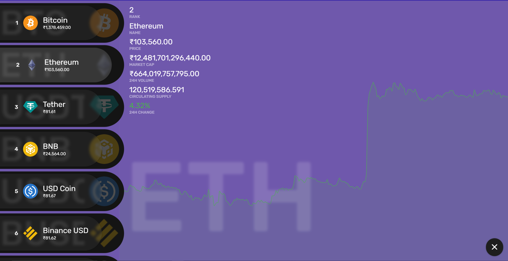

Collection of different Frontend Projects made with HTML, CSS and JavaScript projects I learned and recreated in my own codepen.
100-Coins
Frontend project that gives user details on TOP-100 cryptocurrencies which ranks them on Market Cap. It also gives user details about Name, Price, Circulating Supply and 24H Volume.
Technologies used in this project.
- Node.js for package manager and version control.
- JavaScript for bussiness logic & web API management.
- CoinGecko API for CryptoCoin data.
- Chart.js for showcasing chart data of cryptocurrency.
- React for creating the frontend.
Live link
Solar System
3D-Design of our solar system made with react which shows user different planets and velocity on a scale, with 3 different perspective and correct/idealized Orbit size.
Technologies used in this project.
- Node.js for package manager and version control.
- JavaScript for bussiness logic & web API management.
- Pug for HTML pre-prosessing
- React for creating the frontend.
Live link

Rock-Paper-Scissors-Lizard-Spock Game
Built Rock, Paper, Scissors, Lizard, Spock game using HTML, CSS, and JavaScript. Users are be able to: View the optimal layout for the game depending on their device's screen size. Play Rock, Paper, Scissors, Lizard, Spock game against the computer Maintain the state of the score after refreshing the browser.
Technologies used in this project.
- Node.js for package manager and version control.
- JavaScript for bussiness logic & web API management.
- Pug for HTML pre-prosessing
- React for creating the frontend.